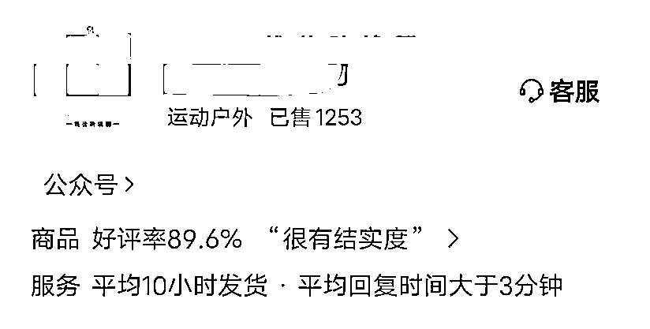

来源：https://zyr90ttkjb.feishu.cn/docx/KdKcdmXuAoxZXJxrnSJcDCtgnQg
生财的圈友大家好，我是跨境压舱石凳子哥，专注做国内外电商，目前国内在做的核心就是微信小店，整个微信生态的全域电商。
微信生态全域电商，不仅仅是小绿书图文，还有视频号，直播，小程序，团长达人推广，私域分销等，今天这篇文章主要是聊聊自己这个月来的实战经验。
关于小绿书图文带货新人怎么玩，之前我有写过一篇帖子，欢迎大家查看，在这里再次感谢生财许老师的帮助：
本篇分享文章的核心价值点，会侧重在以下板块：
1，答疑：新人小白，如何快速出单？
2，选品：好文配好品，爆品出爆文！
3，扎根：如何玩转微信全生态电商？思路分享
4，复盘：从0起步，月销千单，经验教训分享
在正式分享之前，先分享本月干出来的数据：
1，GMV已突破2.1w+，高于74%的同行
2，成单804单，实际售出1250+，高于85%的同行
3，新客成交1.9w+，高于75%的同行
4，公众号图文带货1.88w+，高于99%的同行
5，上品327款，平均每日上新品11款，店铺高评分4.77
6，达人分销8300+，分销达人80+，佣金率45%~70%
2，自营小店公众号曝光破264.1w次
此外的数据：
下面的分享正式开始。
这个问题，基本上来找我咨询小绿书怎么做的人，都会问这句话：怎么样才能快速出单？
据我了解，小部分人是有内测资格能够拿到内部流量的，但是对于普通人来说，这些资源太过遥远。
我的回答往往就是两个字：猛干。
普通人能不能跑出来，其实就是这两个字，猛干。
看过我之前那篇帖子的圈友应该知道，许老师给了机会，然后确立好要做小绿书之后，我每天基本上8篇以上，10~20条左右的文章在更新发布。
这个更新效率才有更高概率去搏击爆款，这个月一直在保持高产，所以号的曝光就一直没有掉出过流量池，昨天的曝光在下跌19%的情况下，依然有接近9w+
包括我在朋友圈也有发过一段话：
出单背后是把事情做好：
作为目前的小绿书玩家而言，下笨功夫，依然是可以打开局面的，对自己要更狠一点，很多人一天发一两条对自己太好了，其实是完全不够的，至少要朝着8~15篇猛干。
然后每天去刷一下爆款素材，看看主图是否有继续优化的空间，把事情做到位之后，结果才会顺理成章的出现。
做个猛人，方能酣畅淋漓。
这个板块，讲一下选品。
什么是好文配好品？
这个月期间我们发现，有些人的文章写的很好，也非常吸引人眼球，也有几万，十万的阅读量，但是一看橱窗，只出了两三单，或者压根就不出单。
这个时候其实就是犯了一个错误是：乱挂品，或者纯自嗨式挂品。
比如你是写厨房好物的文章，结果你挂了一个沐浴露的品，那就算文章曝光再大，其实下单的人都会非常少，确实有这样的人，挂品的时候非常随心所欲。
还有一种情况是，价格特别高，我看到过有一个人文章10w+，数据很好，但是挂的品是一个单价1000多的茶桌挂件，这不摆明了在说：人傻钱多速来？
所以这种情况不出单是必然的，大家都是消费者，而且拼多多，淘宝电商已经这么普及了，大家心里都有一杆秤，所以价格不能太离谱。
好文，配强相关性好品，再加上合适的推流引爆点，才有概率跑出来爆品。
之前我的观点是，文爆则单爆，这句话是没问题的，前提是你避开前面第一点讲的坑，然后在这里再提出：爆品出爆文
如果说文爆则单爆，是爆文占主导，那其实现在的这句话就是品占主导地位了。
爆品出爆文：
意思是首先你的品要有卖点，这样才吸引人，哪怕文章不好，人家看着主图，就会有购买欲望，同时，越有爆款潜质的品，越容易写出爆文，然后拉爆销量。
像这个月我们卖的这一款，大家可以先猜猜是什么东西：
这一款就容易吸引人点进去看，满足人们的猎奇欲望，然后也出了13单，相当于一个测试品，以此验证这个玩法的正确性。
诸如此类的还有这一款，首先主图+标题，就非常吸引人眼球，从而引爆流量。
这种类型的产品在我的账号里还有很多。
核心的选品原理就是：小众+特色+猎奇，如果还能够实用，那就更好了，锦上添花。
随着中西方文化的碰撞，我觉得我们国人大部分的思想观念也在得到提升，
很多人的固定认知就觉得西方更好卖小众爆款，国人不容易接受新思想新事物，但是瞄准好了细分群体和市场，小众特色在国内也会卖的很好。
而这个时候，我自己有店铺的优势就展示出来了，我觉得哪些品好，或者是某一个热点品类出来之后，我就可以很快上架到自己的店铺，然后矩阵多渠道推广，这个执行和落地的效率是非常快的。
像最近这两天，梵蒂冈为了迎合年轻人的喜好风格出的圣物，也是一个强IP属性有衍生品的市场，谁的反应快谁就能够吃到这一口肉。
3.1：文章要有爆款潜质，知识性获得感强，价格合适，大家就愿意买单
3.2：商品要有特殊卖点，要么有帮助，要么有特色，就好卖
3.3：避开拼多多的共识廉价产品，大家能够轻而易举买到的东西，我们就不用再微店卖了
比如，纸巾，牙刷，这一类我列为普通家用品，除非是很有特色，不然我不建议大家去卖。
3.4：确立人群对象，比如应急物资，专门针对中老年人囤物资的产品，也卖的好
3.5：总结：要么干货+实用，要么小众+特色，要么紧迫+预防危机，人们为预期下单。
在这个板块，我将为你分享，目前微信全域电商的玩法，大家有补充的点也可以留言补充，一起交流学习！
就目前的趋势而言，视频号升级为微信小店，微信小店的APP正式推出上线应用商城，都预示着官方要把生态电商打通的决心。
首先，微信生态下共有8大销售渠道，我们得先来看看：
门槛：100粉+橱窗保证金
1，选品：对标的爆款产品
2，取材：各平台找爆款图文素材
3，挂品：账号发布挂载商品
核心：文爆则单爆
门槛：原创视频＞10条+1000有效粉
玩法：就地取材：公众号爆款图文+抖音爆款图文，转视频号发布，当然自己能够出境或者录制商品实物视频会更好。
门槛：200有效粉丝，最好有1000有效粉再开始
1，开播同时持续发布视频+持续加热推流
专属的分销佣金后台，可寻找达人和团长合作。
1，团长推广：给团长单独的佣金比例，她下面有达人
2，达人分销：不在团队下面的独立达人，很多自媒体带货博主
用户目前通过微信直接搜索商品，会跳出小店的商品卡，直接下单
用户点击进去你的微信小店之后，本来想买A，结果还买了B
此外，建议大家把自己的店铺好好装修一下，小店首页是可以放公众号文章，商品卡，以及视频号的，而且还可以置顶商品，以及分类，
微信首先就是一个高强度的私域平台。
玩法：分享员+团长+建私域群+分销
在私域群搞促销活动
这个地方特别提示一下：
目前微信小店还有分享官的功能，绑定好权限之后，只需要分享直播间，就能够赚取其中的佣金，可以说是非常有利于发展私域下单。
老用户复购，增强粘性和打造自己品牌
包括现在微信小店，还可以绑定多个公众号和达人账号，可以对接专门的类目账号做营销矩阵，也是非常厉害的功能。
总得来说，全生态的玩法摸透之后，不管是对于简单的达人分销，还是你也想在微信小店开店，都是非常有必要的。
这个板块，是最后一个板块，写一下这个月来的经验和教训，希望对大家有帮助。
回到时间线：
9.29日0粉起新号
10.6日破200单结束试运营
10.17日破500单
10.31日抵达1253单

时间过得很快，一个月的时间，就这样过去了。
同样都是24小时，都每天在花费自己的时间和精力，但是有的人的产业越做越大，有的人始终停留在温饱线，在其中离不开关键时刻有贵人帮助仙人指路。
在这个项目中，如果不是生财的许老师推荐，投资人张哥把控，爆文教练安七的大力帮助和支持，项目跑得不会这么顺畅。
或者说，我可能压根不会开始，那么就离这一次微信生态的盛宴，就要完美错过了，所以人生路上，关键时刻有人能够帮一把，哪怕只是一句话，都是非常有价值的。
这一次在一起做的有不少伙伴，有的人爆单，有的人出不了单，站在商业角度上是非常正常的，但是还有一个因素就是自己的努力和执行力。
很多人的等靠要，以及期待有救世主的思想特别严重，每天发两三篇文章，然后就期盼着有订单有爆文，实际上加油猛干，趁现在不限次数依然会被系统推荐，大力发文才是应该好好做的。
据我观察，90%的人不出单，就是倒在这一步。
我觉得我身上多多少少带点"猴子”的属性，特别容易做着就觉得自己做好了然后就不干了，表面上是不专注，其实是太浮躁。
如果不是投资人张哥持续鼓励我坚定耕耘，我也不会走到目前的相对优势位，接下来不能懈怠，需要持续放大和深耕，微信全生态电商十分值得期待。
我觉得项目能不能成，什么人来干其实挺重要的，很多人看到赚钱机会入场，但是因为畏难情绪以及行动力不足而黯然离场再抱怨，
真正的猛人，认准了就全心全力干，加班加点干，和这样的人待在一起，创业攻克项目难题就是一件非常有乐趣的事情，所以做个猛人，和猛人交朋友很重要。
总结一下这个月的复盘，其实核心可以化为一句话就是：正确的战略方向+执行力到位猛干，心里只有这件事情，其他的都是其他事。
以上就是本次微信小店全域电商实战系列的分享，有不足之处欢迎大家及时指出，和各位优秀的圈友们一起生财有术~